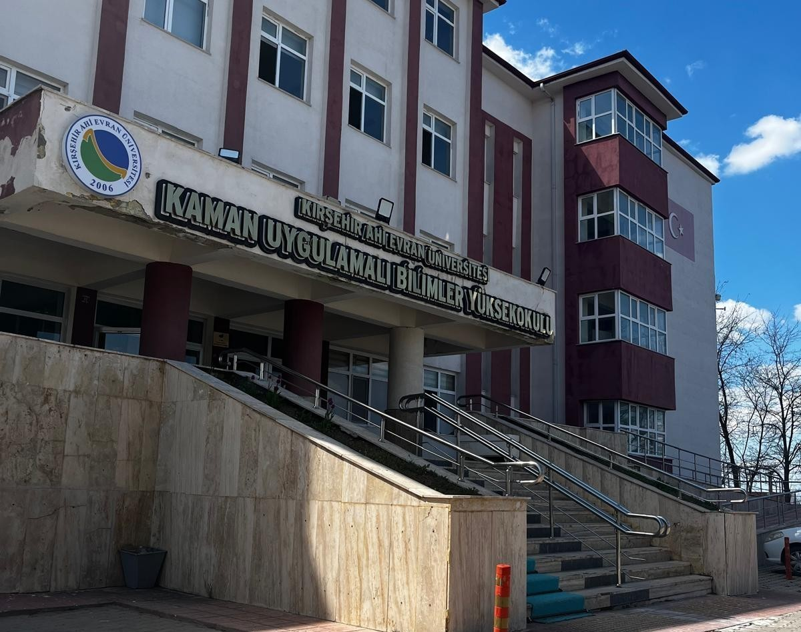
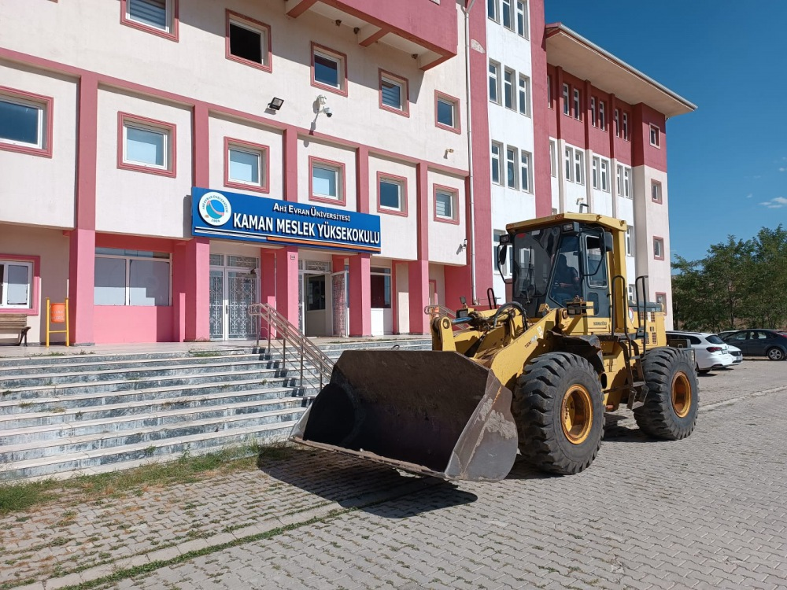

Geleceğin dijital dünyasına yön veren, uygulama odaklı ve modern laboratuvar imkanlarıyla donatılmış bir eğitim yuvası.
Kampüs içi ulaşım oldukça kolaydır. KYK yurtlarına 5 dakika yürüme mesafesindedir.

Sektörün ihtiyaç duyduğu yetkin teknik personeli yetiştiren, köklü geçmişiyle Kaman'ın en önemli akademik birimi.
İlçe merkezinden kalkan dolmuşlar doğrudan kampüs içine kadar girmektedir.